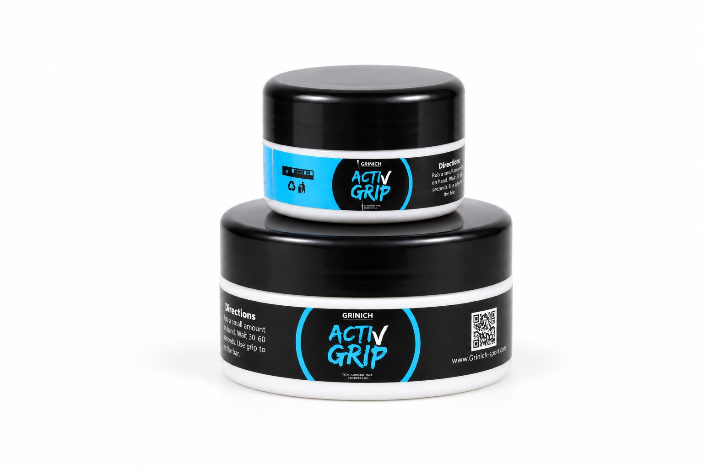
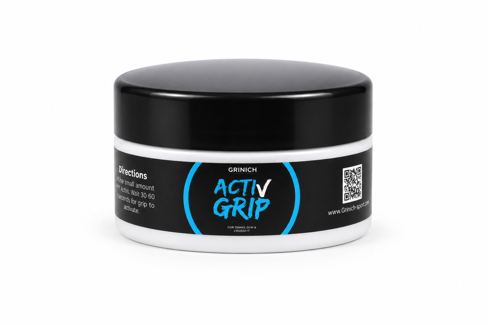
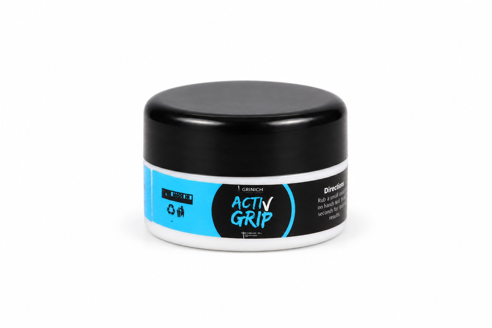
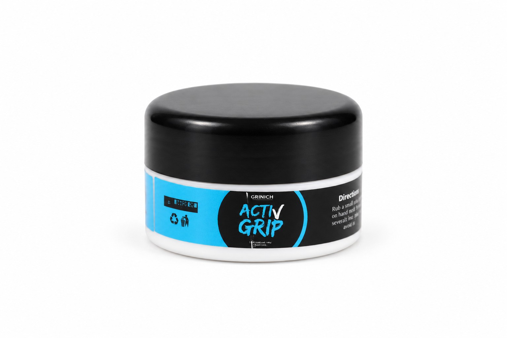
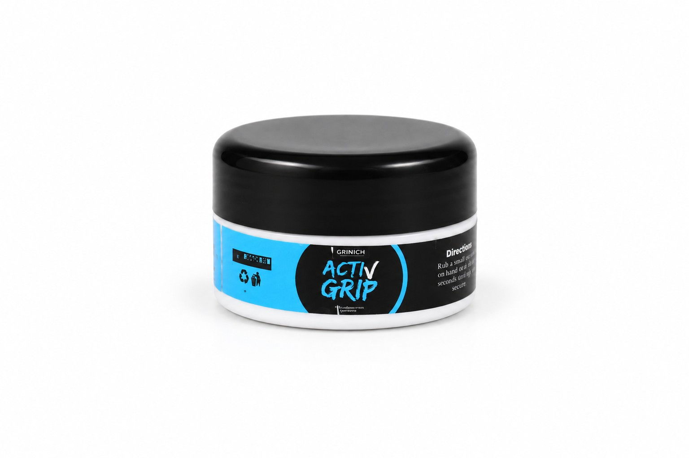

Resists moisture
Designed for rain, grass dew and hand sweat.
ANTI-SLIP WAX FOR FOOTBALL THROW-INS
Rain, dew and sweat can turn a simple throw-in into a loss of control. Activ Grip is designed to give players a more secure hand-to-ball connection without the heavy sticky feel.

During football matches, rain, dew and natural hand sweat can make the ball slippery. That can reduce control, accuracy and speed during throw-ins.
Activ Grip was developed around one simple question: how can a player preserve grip when the ball and hands are wet?

Designed for rain, grass dew and hand sweat.
More friction between the hand and ball without an overly sticky sensation.
Focused on faster, cleaner and more controlled release in difficult conditions.
Rub a small amount onto the hands and wait approximately 30–60 seconds.
Updated with your real Activ Grip pack shots for a more authentic presentation.



“Clear improvement in grip under wet conditions, with further adjustment still needed for precise handling.”
Activ Grip has been tested by international throw-in specialist Thomas Grønnemark. The next stage is additional testing in real rain conditions to refine the formulation.
Rub a small amount onto the hands.
Allow 30–60 seconds for the grip to activate.
Use as needed and evaluate the feel before competition use.
Competition rules can vary by league and federation. Verify local regulations before match use.
For players, coaches, clubs and throw-in specialists interested in wet-condition testing.